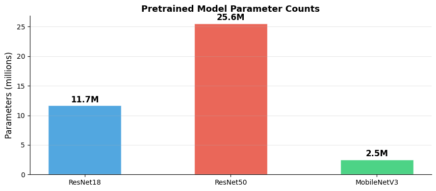
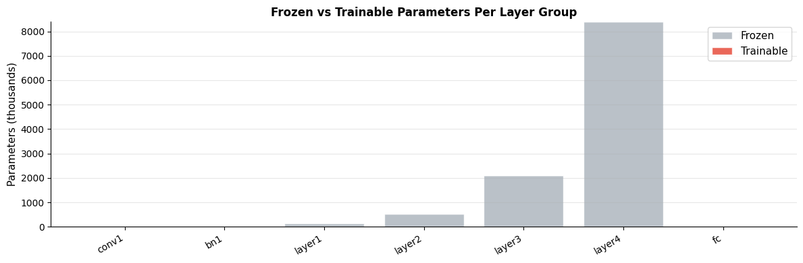
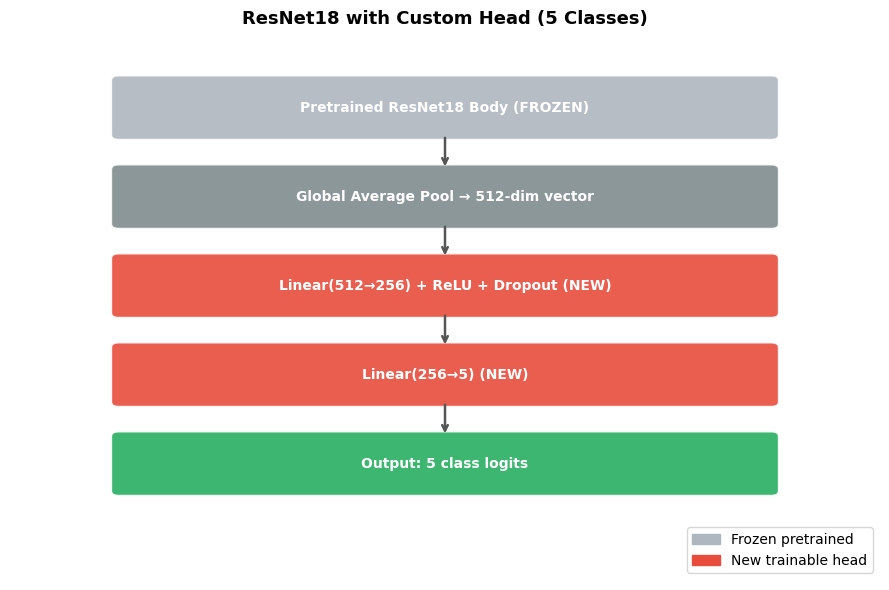

How do you use pretrained models in PyTorch?#
Topics: torchvision.models · Loading Pretrained Weights · Model Architecture · Freezing Layers · Replacing Classifier Head
1. Loading Pretrained Models#
What it is#
torchvision.modelsprovides standard architectures pretrained on ImageNetLoad with
weights='DEFAULT'or specific weight enumHuggingFace provides pretrained NLP/multimodal models
Common models#
Model |
Params |
When to use |
|---|---|---|
ResNet18 |
11M |
Fast baseline, small data |
ResNet50 |
25M |
Standard choice for CV |
EfficientNet-B0 |
5M |
Best accuracy/param tradeoff |
ViT-B/16 |
86M |
Large datasets, SOTA |
MobileNetV3 |
5M |
Mobile/edge deployment |
Gotchas#
Pretrained models expect normalized inputs:
mean=[0.485,0.456,0.406],std=[0.229,0.224,0.225]Always check what input size the model expects
weights=Nonegives random initialization — useful for architecture only
import torch
import torch.nn as nn
import matplotlib.pyplot as plt
import numpy as np
try:
from torchvision import models
# Load pretrained ResNet18
model = models.resnet18(weights='DEFAULT')
print(model)
# Inspect architecture
total_params = sum(p.numel() for p in model.parameters())
trainable_params = sum(p.numel() for p in model.parameters() if p.requires_grad)
print(f"Total params : {total_params:,}")
print(f"Trainable params: {trainable_params:,}")
print(f"Classifier head : {model.fc}")
# Test forward pass
x = torch.randn(2, 3, 224, 224)
out = model(x)
print(f"Output shape: {out.shape}") # (2, 1000) — ImageNet classes
# Compare models by param count
model_configs = {
'ResNet18' : models.resnet18,
'ResNet50' : models.resnet50,
'MobileNetV3': models.mobilenet_v3_small,
}
names, param_counts = [], []
for name, fn in model_configs.items():
m = fn(weights=None)
names.append(name)
param_counts.append(sum(p.numel() for p in m.parameters()) / 1e6)
fig, ax = plt.subplots(figsize=(9, 4))
colors = ['#3498DB', '#E74C3C', '#2ECC71']
bars = ax.bar(names, param_counts, color=colors, alpha=0.85, edgecolor='white', width=0.5)
ax.set_ylabel('Parameters (millions)', fontsize=12)
ax.set_title('Pretrained Model Parameter Counts', fontsize=13, fontweight='bold')
ax.grid(True, alpha=0.3, axis='y')
ax.spines['top'].set_visible(False); ax.spines['right'].set_visible(False)
for bar, val in zip(bars, param_counts):
ax.text(bar.get_x() + bar.get_width()/2, bar.get_height() + 0.2,
f'{val:.1f}M', ha='center', va='bottom', fontsize=12, fontweight='bold')
plt.tight_layout()
plt.savefig('pretrained_param_counts.png', dpi=120, bbox_inches='tight')
plt.show()
except ImportError:
print("torchvision not available — install with: pip install torchvision")
print("Models: resnet18, resnet50, efficientnet_b0, mobilenet_v3_small, vit_b_16")
ResNet(
(conv1): Conv2d(3, 64, kernel_size=(7, 7), stride=(2, 2), padding=(3, 3), bias=False)
(bn1): BatchNorm2d(64, eps=1e-05, momentum=0.1, affine=True, track_running_stats=True)
(relu): ReLU(inplace=True)
(maxpool): MaxPool2d(kernel_size=3, stride=2, padding=1, dilation=1, ceil_mode=False)
(layer1): Sequential(
(0): BasicBlock(
(conv1): Conv2d(64, 64, kernel_size=(3, 3), stride=(1, 1), padding=(1, 1), bias=False)
(bn1): BatchNorm2d(64, eps=1e-05, momentum=0.1, affine=True, track_running_stats=True)
(relu): ReLU(inplace=True)
(conv2): Conv2d(64, 64, kernel_size=(3, 3), stride=(1, 1), padding=(1, 1), bias=False)
(bn2): BatchNorm2d(64, eps=1e-05, momentum=0.1, affine=True, track_running_stats=True)
)
(1): BasicBlock(
(conv1): Conv2d(64, 64, kernel_size=(3, 3), stride=(1, 1), padding=(1, 1), bias=False)
(bn1): BatchNorm2d(64, eps=1e-05, momentum=0.1, affine=True, track_running_stats=True)
(relu): ReLU(inplace=True)
(conv2): Conv2d(64, 64, kernel_size=(3, 3), stride=(1, 1), padding=(1, 1), bias=False)
(bn2): BatchNorm2d(64, eps=1e-05, momentum=0.1, affine=True, track_running_stats=True)
)
)
(layer2): Sequential(
(0): BasicBlock(
(conv1): Conv2d(64, 128, kernel_size=(3, 3), stride=(2, 2), padding=(1, 1), bias=False)
(bn1): BatchNorm2d(128, eps=1e-05, momentum=0.1, affine=True, track_running_stats=True)
(relu): ReLU(inplace=True)
(conv2): Conv2d(128, 128, kernel_size=(3, 3), stride=(1, 1), padding=(1, 1), bias=False)
(bn2): BatchNorm2d(128, eps=1e-05, momentum=0.1, affine=True, track_running_stats=True)
(downsample): Sequential(
(0): Conv2d(64, 128, kernel_size=(1, 1), stride=(2, 2), bias=False)
(1): BatchNorm2d(128, eps=1e-05, momentum=0.1, affine=True, track_running_stats=True)
)
)
(1): BasicBlock(
(conv1): Conv2d(128, 128, kernel_size=(3, 3), stride=(1, 1), padding=(1, 1), bias=False)
(bn1): BatchNorm2d(128, eps=1e-05, momentum=0.1, affine=True, track_running_stats=True)
(relu): ReLU(inplace=True)
(conv2): Conv2d(128, 128, kernel_size=(3, 3), stride=(1, 1), padding=(1, 1), bias=False)
(bn2): BatchNorm2d(128, eps=1e-05, momentum=0.1, affine=True, track_running_stats=True)
)
)
(layer3): Sequential(
(0): BasicBlock(
(conv1): Conv2d(128, 256, kernel_size=(3, 3), stride=(2, 2), padding=(1, 1), bias=False)
(bn1): BatchNorm2d(256, eps=1e-05, momentum=0.1, affine=True, track_running_stats=True)
(relu): ReLU(inplace=True)
(conv2): Conv2d(256, 256, kernel_size=(3, 3), stride=(1, 1), padding=(1, 1), bias=False)
(bn2): BatchNorm2d(256, eps=1e-05, momentum=0.1, affine=True, track_running_stats=True)
(downsample): Sequential(
(0): Conv2d(128, 256, kernel_size=(1, 1), stride=(2, 2), bias=False)
(1): BatchNorm2d(256, eps=1e-05, momentum=0.1, affine=True, track_running_stats=True)
)
)
(1): BasicBlock(
(conv1): Conv2d(256, 256, kernel_size=(3, 3), stride=(1, 1), padding=(1, 1), bias=False)
(bn1): BatchNorm2d(256, eps=1e-05, momentum=0.1, affine=True, track_running_stats=True)
(relu): ReLU(inplace=True)
(conv2): Conv2d(256, 256, kernel_size=(3, 3), stride=(1, 1), padding=(1, 1), bias=False)
(bn2): BatchNorm2d(256, eps=1e-05, momentum=0.1, affine=True, track_running_stats=True)
)
)
(layer4): Sequential(
(0): BasicBlock(
(conv1): Conv2d(256, 512, kernel_size=(3, 3), stride=(2, 2), padding=(1, 1), bias=False)
(bn1): BatchNorm2d(512, eps=1e-05, momentum=0.1, affine=True, track_running_stats=True)
(relu): ReLU(inplace=True)
(conv2): Conv2d(512, 512, kernel_size=(3, 3), stride=(1, 1), padding=(1, 1), bias=False)
(bn2): BatchNorm2d(512, eps=1e-05, momentum=0.1, affine=True, track_running_stats=True)
(downsample): Sequential(
(0): Conv2d(256, 512, kernel_size=(1, 1), stride=(2, 2), bias=False)
(1): BatchNorm2d(512, eps=1e-05, momentum=0.1, affine=True, track_running_stats=True)
)
)
(1): BasicBlock(
(conv1): Conv2d(512, 512, kernel_size=(3, 3), stride=(1, 1), padding=(1, 1), bias=False)
(bn1): BatchNorm2d(512, eps=1e-05, momentum=0.1, affine=True, track_running_stats=True)
(relu): ReLU(inplace=True)
(conv2): Conv2d(512, 512, kernel_size=(3, 3), stride=(1, 1), padding=(1, 1), bias=False)
(bn2): BatchNorm2d(512, eps=1e-05, momentum=0.1, affine=True, track_running_stats=True)
)
)
(avgpool): AdaptiveAvgPool2d(output_size=(1, 1))
(fc): Linear(in_features=512, out_features=1000, bias=True)
)
Total params : 11,689,512
Trainable params: 11,689,512
Classifier head : Linear(in_features=512, out_features=1000, bias=True)
Output shape: torch.Size([2, 1000])

2. Freezing Layers#
What it is#
Set
requires_grad=Falseon parameters you don’t want to updateFrozen layers still participate in forward pass but receive no gradients
Dramatically reduces trainable parameters and prevents catastrophic forgetting
Strategy#
Feature extraction: freeze ALL pretrained layers, train only new head
Partial fine-tuning: freeze early layers, unfreeze later layers + head
When to freeze#
Small target dataset — risk of overfitting if too many params are free
Source and target domains are similar — pretrained features transfer well
Limited compute — training fewer params is faster
Gotchas#
Frozen layers still consume memory — their activations are still computed
BatchNorm layers: freeze with
model.eval()during feature extractionCheck trainable param count after freezing to verify it worked
import torch
import torch.nn as nn
import matplotlib.pyplot as plt
import matplotlib.patches as mpatches
try:
from torchvision import models
model = models.resnet18(weights='DEFAULT')
# Step 1: Freeze everything
for param in model.parameters():
param.requires_grad = False
# Step 2: Replace and unfreeze classifier head
model.fc = nn.Linear(model.fc.in_features, 5) # 5 custom classes
total = sum(p.numel() for p in model.parameters())
trainable = sum(p.numel() for p in model.parameters() if p.requires_grad)
frozen = total - trainable
print(f"Total params : {total:,}")
print(f"Frozen params : {frozen:,} ({100*frozen/total:.1f}%)")
print(f"Trainable params: {trainable:,} ({100*trainable/total:.1f}%)")
# Show which layers are frozen
print("Layer freeze status:")
for name, param in model.named_parameters():
status = 'trainable' if param.requires_grad else 'frozen'
print(f" {name:<40}: {status}")
# Visualize frozen vs trainable param distribution
layer_names, frozen_counts, trainable_counts = [], [], []
for name, module in model.named_children():
fr = sum(p.numel() for p in module.parameters() if not p.requires_grad)
tr = sum(p.numel() for p in module.parameters() if p.requires_grad)
if fr + tr > 0:
layer_names.append(name)
frozen_counts.append(fr / 1e3)
trainable_counts.append(tr / 1e3)
x = range(len(layer_names))
fig, ax = plt.subplots(figsize=(12, 4))
ax.bar(x, frozen_counts, color='#AEB6BF', label='Frozen', alpha=0.85, edgecolor='white')
ax.bar(x, trainable_counts, color='#E74C3C', label='Trainable', alpha=0.85, edgecolor='white',
bottom=frozen_counts)
ax.set_xticks(x)
ax.set_xticklabels(layer_names, rotation=30, ha='right', fontsize=10)
ax.set_ylabel('Parameters (thousands)', fontsize=11)
ax.set_title('Frozen vs Trainable Parameters Per Layer Group', fontsize=12, fontweight='bold')
ax.legend(fontsize=11)
ax.grid(True, alpha=0.3, axis='y')
ax.spines['top'].set_visible(False); ax.spines['right'].set_visible(False)
plt.tight_layout()
plt.savefig('frozen_params.png', dpi=120, bbox_inches='tight')
plt.show()
except ImportError:
print("torchvision not installed")
print("Pattern: for param in model.parameters(): param.requires_grad = False")
print("Then: model.fc = nn.Linear(model.fc.in_features, num_classes)")
Total params : 11,179,077
Frozen params : 11,176,512 (100.0%)
Trainable params: 2,565 (0.0%)
Layer freeze status:
conv1.weight : frozen
bn1.weight : frozen
bn1.bias : frozen
layer1.0.conv1.weight : frozen
layer1.0.bn1.weight : frozen
layer1.0.bn1.bias : frozen
layer1.0.conv2.weight : frozen
layer1.0.bn2.weight : frozen
layer1.0.bn2.bias : frozen
layer1.1.conv1.weight : frozen
layer1.1.bn1.weight : frozen
layer1.1.bn1.bias : frozen
layer1.1.conv2.weight : frozen
layer1.1.bn2.weight : frozen
layer1.1.bn2.bias : frozen
layer2.0.conv1.weight : frozen
layer2.0.bn1.weight : frozen
layer2.0.bn1.bias : frozen
layer2.0.conv2.weight : frozen
layer2.0.bn2.weight : frozen
layer2.0.bn2.bias : frozen
layer2.0.downsample.0.weight : frozen
layer2.0.downsample.1.weight : frozen
layer2.0.downsample.1.bias : frozen
layer2.1.conv1.weight : frozen
layer2.1.bn1.weight : frozen
layer2.1.bn1.bias : frozen
layer2.1.conv2.weight : frozen
layer2.1.bn2.weight : frozen
layer2.1.bn2.bias : frozen
layer3.0.conv1.weight : frozen
layer3.0.bn1.weight : frozen
layer3.0.bn1.bias : frozen
layer3.0.conv2.weight : frozen
layer3.0.bn2.weight : frozen
layer3.0.bn2.bias : frozen
layer3.0.downsample.0.weight : frozen
layer3.0.downsample.1.weight : frozen
layer3.0.downsample.1.bias : frozen
layer3.1.conv1.weight : frozen
layer3.1.bn1.weight : frozen
layer3.1.bn1.bias : frozen
layer3.1.conv2.weight : frozen
layer3.1.bn2.weight : frozen
layer3.1.bn2.bias : frozen
layer4.0.conv1.weight : frozen
layer4.0.bn1.weight : frozen
layer4.0.bn1.bias : frozen
layer4.0.conv2.weight : frozen
layer4.0.bn2.weight : frozen
layer4.0.bn2.bias : frozen
layer4.0.downsample.0.weight : frozen
layer4.0.downsample.1.weight : frozen
layer4.0.downsample.1.bias : frozen
layer4.1.conv1.weight : frozen
layer4.1.bn1.weight : frozen
layer4.1.bn1.bias : frozen
layer4.1.conv2.weight : frozen
layer4.1.bn2.weight : frozen
layer4.1.bn2.bias : frozen
fc.weight : trainable
fc.bias : trainable

3. Replacing the Classifier Head#
What it is#
Swap the final layer(s) of a pretrained model with new layers for your task
The new head is randomly initialized — it has
requires_grad=Trueby defaultThis is the minimum change needed to adapt a pretrained model
Common head replacements#
Model |
Original head |
How to replace |
|---|---|---|
ResNet |
|
|
VGG |
|
Replace last Linear |
EfficientNet |
|
Replace last Linear |
MobileNetV3 |
|
Replace last Linear |
Interview Q&A#
How do you find the input size of the classifier head?
Print
modeland look at the last Linear layer’sin_featuresOr:
model.fc.in_featuresfor ResNet
What if you need a more complex head?
Replace with
nn.Sequentialcontaining multiple layersAdd BatchNorm, Dropout, multiple Linear layers as needed
Gotchas#
model.fc.in_featuresbefore replacing — use this asin_featuresfor new layerDifferent architectures use different attribute names for their head
import torch
import torch.nn as nn
import matplotlib.pyplot as plt
import matplotlib.patches as mpatches
try:
from torchvision import models
NUM_CLASSES = 5
# ResNet18 — replace fc
resnet = models.resnet18(weights='DEFAULT')
in_features = resnet.fc.in_features
print(f"ResNet18 original head: {resnet.fc}")
resnet.fc = nn.Sequential(
nn.Linear(in_features, 256),
nn.ReLU(),
nn.Dropout(0.3),
nn.Linear(256, NUM_CLASSES),
)
print(f"ResNet18 new head : {resnet.fc}")
# Freeze body, train head only
for name, param in resnet.named_parameters():
param.requires_grad = 'fc' in name
trainable = sum(p.numel() for p in resnet.parameters() if p.requires_grad)
total = sum(p.numel() for p in resnet.parameters())
print(f"Training {trainable:,} / {total:,} params ({100*trainable/total:.1f}%)")
# Forward pass test
x = torch.randn(2, 3, 224, 224)
out = resnet(x)
print(f"Output: {out.shape}") # (2, 5)
# Visualize head architecture
fig, ax = plt.subplots(figsize=(9, 6))
ax.set_xlim(0, 8); ax.set_ylim(0, 8); ax.axis('off')
ax.set_title('ResNet18 with Custom Head (5 Classes)', fontsize=13, fontweight='bold')
def box(ax, x, y, w, h, label, color):
rect = mpatches.FancyBboxPatch((x, y), w, h,
boxstyle='round,pad=0.07', facecolor=color, edgecolor='white',
linewidth=1.5, alpha=0.9)
ax.add_patch(rect)
ax.text(x+w/2, y+h/2, label, ha='center', va='center',
fontsize=10, fontweight='bold', color='white')
def arr(ax, x1, y1, x2, y2):
ax.annotate('', xy=(x2, y2), xytext=(x1, y1),
arrowprops=dict(arrowstyle='->', color='#555', lw=1.8))
box(ax, 1, 6.5, 6, 0.8, 'Pretrained ResNet18 Body (FROZEN)', '#AEB6BF')
box(ax, 1, 5.2, 6, 0.8, 'Global Average Pool → 512-dim vector', '#7F8C8D')
box(ax, 1, 3.9, 6, 0.8, 'Linear(512→256) + ReLU + Dropout (NEW)', '#E74C3C')
box(ax, 1, 2.6, 6, 0.8, 'Linear(256→5) (NEW)', '#E74C3C')
box(ax, 1, 1.3, 6, 0.8, 'Output: 5 class logits', '#27AE60')
for y_pair in [(6.5, 5.2), (5.2, 3.9), (3.9, 2.6), (2.6, 1.3)]:
arr(ax, 4, y_pair[0], 4, y_pair[1]+0.8)
legend = [mpatches.Patch(color='#AEB6BF', label='Frozen pretrained'),
mpatches.Patch(color='#E74C3C', label='New trainable head')]
ax.legend(handles=legend, loc='lower right', fontsize=10)
plt.tight_layout()
plt.savefig('custom_head.png', dpi=120, bbox_inches='tight')
plt.show()
except ImportError:
print("torchvision not installed")
ResNet18 original head: Linear(in_features=512, out_features=1000, bias=True)
ResNet18 new head : Sequential(
(0): Linear(in_features=512, out_features=256, bias=True)
(1): ReLU()
(2): Dropout(p=0.3, inplace=False)
(3): Linear(in_features=256, out_features=5, bias=True)
)
Training 132,613 / 11,309,125 params (1.2%)
Output: torch.Size([2, 5])
